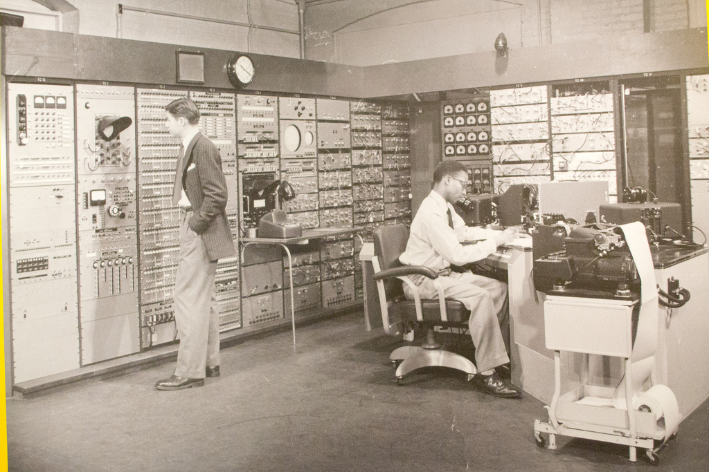
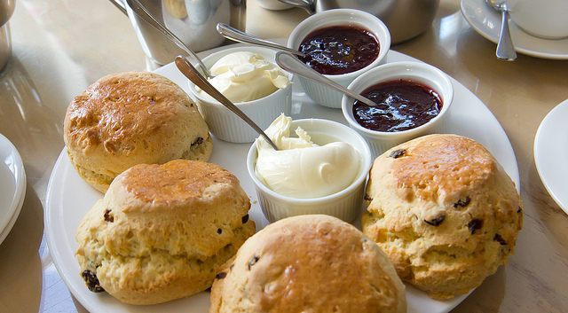
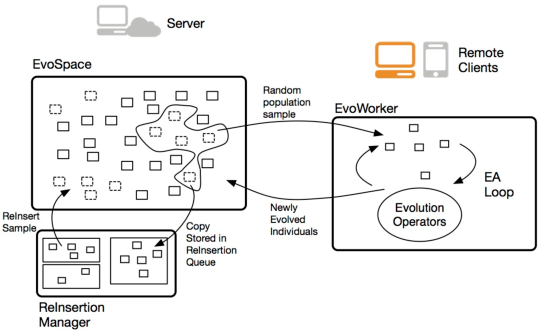
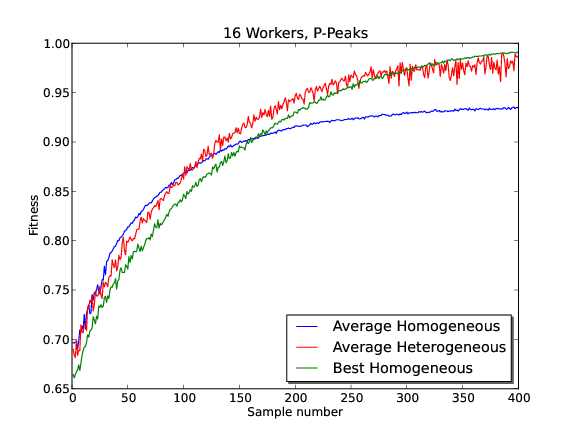
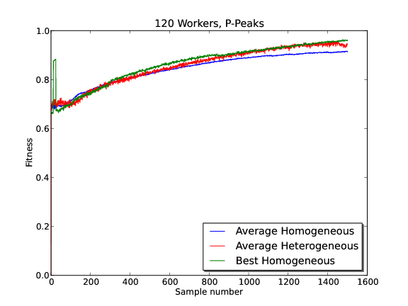

There’s method in my serendipity: Using Random Parameters in Distributed Evolutionary Algorithms
Merelo-Guervós, García-Valdez, Trujillo, Fernández de la Vega
GeNeura + CITIC for SBLPA-PPSN. Watch this at http://goo.gl/5iydcj
Setting evolutionary algorithm parameters is hard
Flickr image by Josh Graciano @flic.kr/p/aHKm1R
Even more so when there are hundreds of them

Flickr image by Nathanael Coyne @flic.kr/p/sKjX3
My parameters are better than your parameters
And there is no free lunch in distributed evolutionary algorithms
So why not try a Randomized Parameter Setting Strategy (RPSS)?

Flickr image by Nathan Nelson @flic.kr/p/xjH5
Pool-based evolutionary algorithms: not so canonical any more

Flickr image by Lorianne diSabato @flic.kr/p/nXfbQ6
Detaching population from operations

Chromosomes are taken from a persistent pool and brought back after evaluation, mutation, crossover
Three good things about pool-based EAs

Flickr image by Mutiara Karina https://flic.kr/p/a9SSm3.
1. Self-organizing clients
2. Fully asynchronous
3. Persistent population
...but still the same problem
... or worse
Flickr image by Nathanael Coyne @flic.kr/p/sKjX3
EvoSpace: have a free lunch and eat it too
Image by Ian at https://flic.kr/p/murCeu
EvoSpace: a cloudy pool-based EA
EvoSpace uses the tuple space model.
Clients are expected to be unreliable
Population pulled in blocks
EvoWorkers of the world, unite for optimization
- Clients == EvoWorkers extract chromosomes
- They leave ghosts
- Run for n generations
- Return to pool, erasing ghosts
- No return? Ghosts reinserted
Evospace implementation
Server-side: Redis + CherryPy.
Client side: web services consumers. Here: DEAP
EvoSpace is open source
Try it out at GitHub
Random Parameter Setting Strategy (RPSS) does P-Peaks (and others too)
P-Peaks is the minimum distance to P binary strings
Hard problem for EAs
There's method in my serendipity
Changing Crossover and Mutation [0,1], Sample Size [12,24], Generations per run [5,30]
Now fight
It's Average Homogeneous (200 runs different random parameters) vs Best Homogeneous (best from above) vs Average Heterogenous (RPSS)
Solving problems using serendipity
P-Peaks with P=200 peaks, 100-bit strings
Image from Library of congress
EvoWorking on the chain gang
Testing with a different number of EvoWorkers: 16, 120
Sixteen different workers
Upping the ante to 120 EvoWorkers
The more, the merrier
- RPSS obtains results roughly similar to Best-homogeneous.
- RPSS is always better than homogeneous
- But we don't need to run 200 examples to find the best!